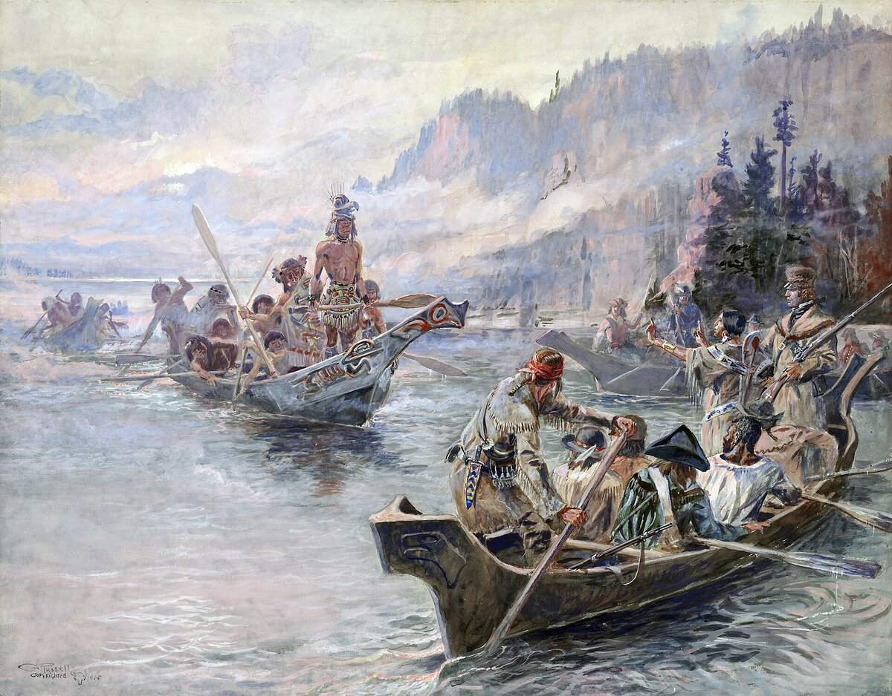

B1 · American History
Lewis and Clark: Into the Unknown
A month to carry the boats around one waterfall, and a vote on the Pacific coast that should not have been possible.
Play the audio and follow along, then read it again on your own. Tap or hover over a highlighted word to see what it means.
Everything about the expedition's first summer went roughly to plan, which turned out to be the exception rather than the rule.
The Corps of Discovery left the Missouri near St. Louis in May 1804 and worked upriver against the current all summer. Thirty-odd men pushed, rowed and pulled a heavy boat about twenty kilometers a day. In August one sergeant, Charles Floyd, died suddenly — almost certainly of a burst appendix, which no doctor in the world could have treated at the time. He was the only member of the party to die in two and a half years.
They spent the winter of 1804 at Fort Mandan, in today's North Dakota, among the Mandan and Hidatsa, whose towns were a major trading center long before any American arrived. There they hired the interpreter Toussaint Charbonneau, and with him came his young Shoshone wife, Sacagawea, who gave birth to a son in February.
The following June, the river gave them the first serious problem. At the Great Falls of the Missouri they expected a short walk around a waterfall. They found a series of five falls, and the detour took a month: boats emptied, loads carried on improvised wooden wheels over ground covered in cactus, through heat, hail and grizzly bears.
The second problem was geography itself. Jefferson's instructions assumed a short portage between the Missouri and a river running to the Pacific. In August, standing on a pass in today's Idaho, Lewis looked west and saw mountains to the horizon in every direction. There was no water route across the continent. That fact, more than anything else they brought home, changed how the United States understood its own map.

They bought horses from Sacagawea's Shoshone relatives and crossed the Bitterroot Mountains in September on the Lolo Trail. It was the worst eleven days of the journey. There was no game, snow was already falling, and they ate candles and a horse. They came down the western side starving and were fed by the Nez Perce, who could have taken everything they had and instead kept them alive.
By canoe down the Clearwater, the Snake and the Columbia, they reached the Pacific in November 1805. Clark wrote “Ocian in view! O! the joy” — his spelling, not a printing error.
What happened next is one of the reasons the expedition is still studied. They had to decide where to spend the winter, so they held a vote. Every member voted, including York, an enslaved man owned by Clark, and Sacagawea, a Native woman. Neither of them could have voted anywhere in the United States at the time, and neither gained anything permanent from it: York was not freed for years afterwards, and Sacagawea's later life is almost unrecorded.

They built Fort Clatsop, waited out a wet winter, and started home in March 1806. They reached St. Louis in September, after about 13,000 kilometers. The town fired a gun in welcome; most people had assumed they were dead.
The expedition brought back journals describing 178 plants and 122 animals previously unknown to science, maps that were used for decades, and detailed accounts of nearly fifty Native nations. It also brought back the route that the fur trade, the wagon trains and eventually the railroads would follow — which is why, for the people who had fed the Corps on its way through, the expedition was less a discovery than an announcement.
Key Vocabulary
- upriver in the direction opposite to the flow of a river
- a current the movement of water in a river or the sea
- a portage the act of carrying boats and loads overland between two stretches of water
- a detour a longer way around something that is blocking the direct route
- game wild animals hunted for food
- an interpreter a person who translates speech from one language to another
- to starve to suffer or die from lack of food
- a journal a daily written record
- the fur trade the business of buying and selling animal skins
- an account a written or spoken description of something that happened
Lewis and Clark: Into the Unknown — B1 · American History · Renan the Teacher, English Language Academy · https://renangrossi.github.io/englishclasses/reading/b1/lewis-and-clark-unknown.html
Interactive Exercises
Practice
Complete each exercise, then click Submit to see your score and an explanation for every answer.
Speaking & Writing
Discussion
There are no right answers here — use these to practice speaking, or write a short answer to each.
- The expedition depended on help from the people it met. Does that change how you think about the word “discovery”?
- Everybody voted on where to spend the winter, including people who had no rights at home. Why do you think that happened on the coast and not in Washington?
- If you had to choose one of the hardships in this text to avoid — the river, the portage or the mountains — which would it be?